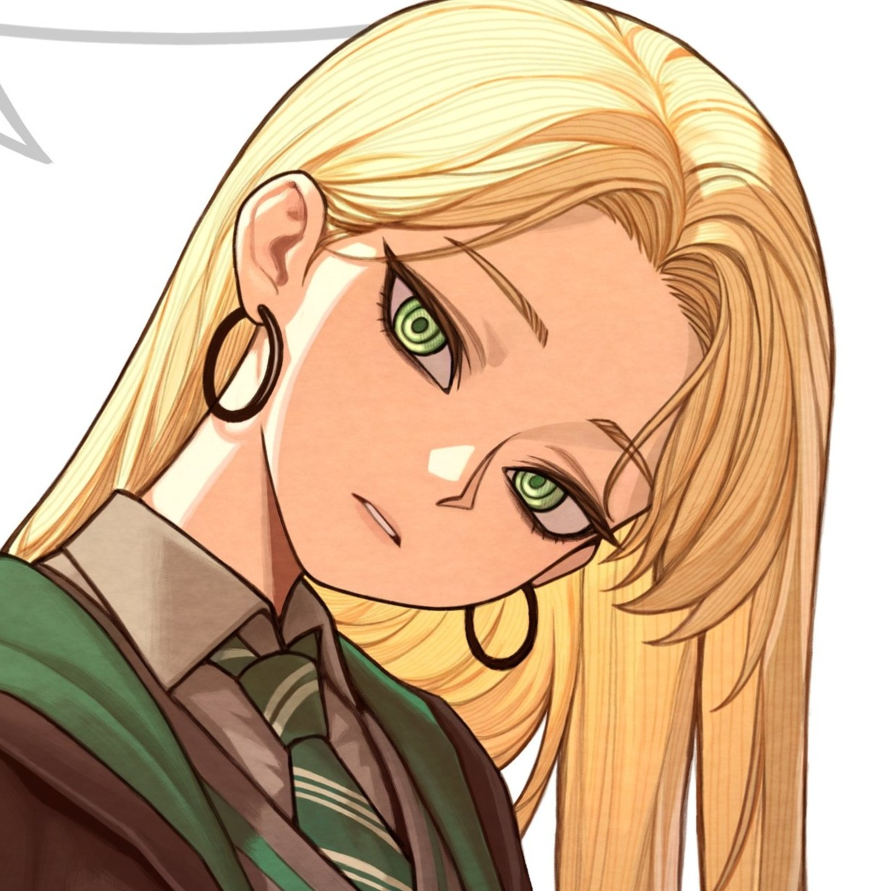

← Back to The Goblet of Fire

Memory
The Line Unceasing
Dracaena Malfoy Memory · The Wizarding World
The same parting from her side — the warning given, the warm weeks closed behind her, two sides of a war now.
This Memory is being written. The full scene — banner, Info sidebar, and the chapter-depth vignette — will replace this placeholder. For now this confirms the inline link from the Chronicle spine resolves to its canonical page.